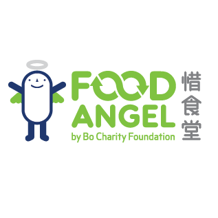
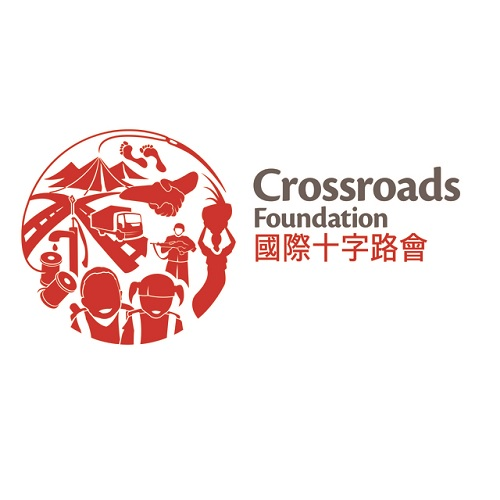

如何幫助？
我們可以通過多種方式協助達成志願目標。我們可以在組織中做志願者，也可以向慈善機構捐贈金錢或物品來支持有需要的人。我們還可以大力倡導我們所關心的事業。 不要低估您付出的時間、金錢和精力。一點一滴的努力，都為老人創造更美好的生活品質！
加入我們吧!
志願服務
我們目前正在尋找志願者協助我們維護網站，並為社區老年成員提供支持。由於許多年輕人忙於工作和其他責任，老年人常常未能尋獲適時的資訊來解決他們的疑問和擔憂。我們的志願者將協助回答有關瀏覽網站的問題、查找他們所需的率訊息以及為他們提供熱線電話或聯繫支授服務。
志願服務和捐贈
] 有許多組織可以幫助支授老年人生活所需，並歡迎您捐贈的資金和物品。除了捐款之外，您還可以運用自己的時間和精力做志願者 。
|

|
 | |
 |

|
倡議志願目標
改善香港長者的生活質素是一項至關重要的課題，需要社會各界的參與和支持。 個人可以通過多種方式參與並發揮作用，包括參與民意調查、通過論壇提供反饋、利用廣播機會以及向地區顧問和政府反映問題。
民意調查是收集社區意見並為政策制定者提供寶貴意見的有效方法。通過參與這些民意調查，個人可以表達他們對影響香港老年人口的問題的擔憂和主張。
論壇為個人提供了一個分享如何提高生活質量的想法和建議的平台。人們進行建設性對話，共同努力尋找解決老年人面臨挑戰的方案
廣播機會可用於提高公眾對影響老年人口的問題的認識並進行教育。通過分享他們的經驗和見解，可以大眾幫助促進對老年人的理解和同理心。
向地區輔導員和政府反映問題是倡導變革的重要方式。通過與這些官員聯繫，個人可以表達他們的擔憂並呼籲採取行動改善老年人的生活。